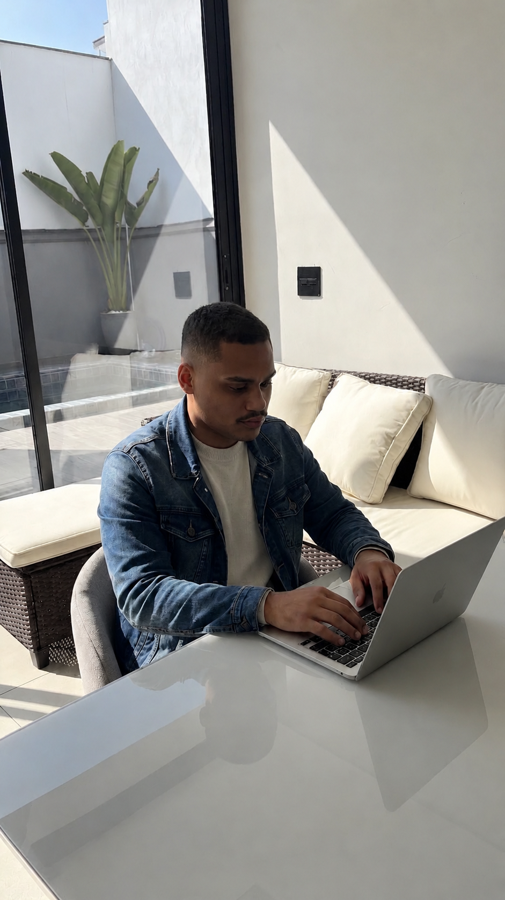

Criação de sites & identidade visual
Sites animados com inteligência artificial, otimizados para SEO e blindados, em conformidade com a LGPD.
Sites vivos, com animações e recursos inteligentes que prendem a atenção do visitante.
SEO desde a base do projeto, para o seu site aparecer para quem realmente procura.
Cibersegurança e total conformidade com a LGPD, do primeiro rascunho ao site no ar.
O que eu faço
Tecnologia de ponta, presença no Google e segurança dentro da lei, tudo em um só lugar.
Experiências com movimento e interações inteligentes, usando IA para acelerar a criação e personalizar cada detalhe.
Seu site encontrado no Google. Estrutura, performance e conteúdo otimizados para ranquear e atrair clientes.
Coleta e uso de dados dentro da lei. Políticas, consentimento e boas práticas para proteger você e seus clientes.
Site protegido contra ameaças: certificado SSL, backups e monitoramento para manter tudo seguro e no ar.
Como trabalhamos
Entendo seu negócio, público e objetivos numa conversa direta.
Prototipo o layout e a identidade até ficar exatamente do seu jeito.
Codifico um site rápido, responsivo e pronto pra escalar.
Publico, te oriento no uso e sigo por perto pra manutenção.
Trabalhos recentes

Quem faz
Crio sites que unem estética, performance e inteligência artificial — pensados desde o início para ranquear no Google e converter visitantes em clientes.
Trabalho de ponta a ponta: descoberta, design, desenvolvimento e suporte, sempre com segurança e conformidade com a LGPD no processo.
Vamos conversar →O que dizem
O site ficou muito acima do que eu esperava — as animações deixaram tudo mais vivo e os clientes comentam direto.
Em poucas semanas já estávamos aparecendo no Google para os termos certos. Processo transparente do início ao fim.
Ficamos tranquilos com a parte de segurança e LGPD — algo que nenhum outro fornecedor tinha explicado direito.
Me chama e conta um pouco sobre seu projeto — respondo rápido pelo WhatsApp.